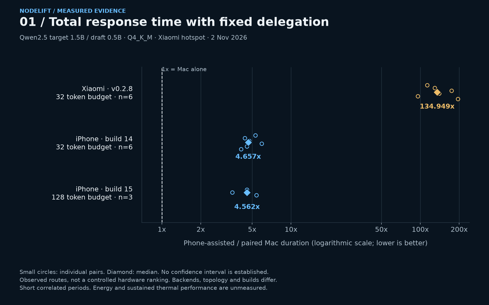
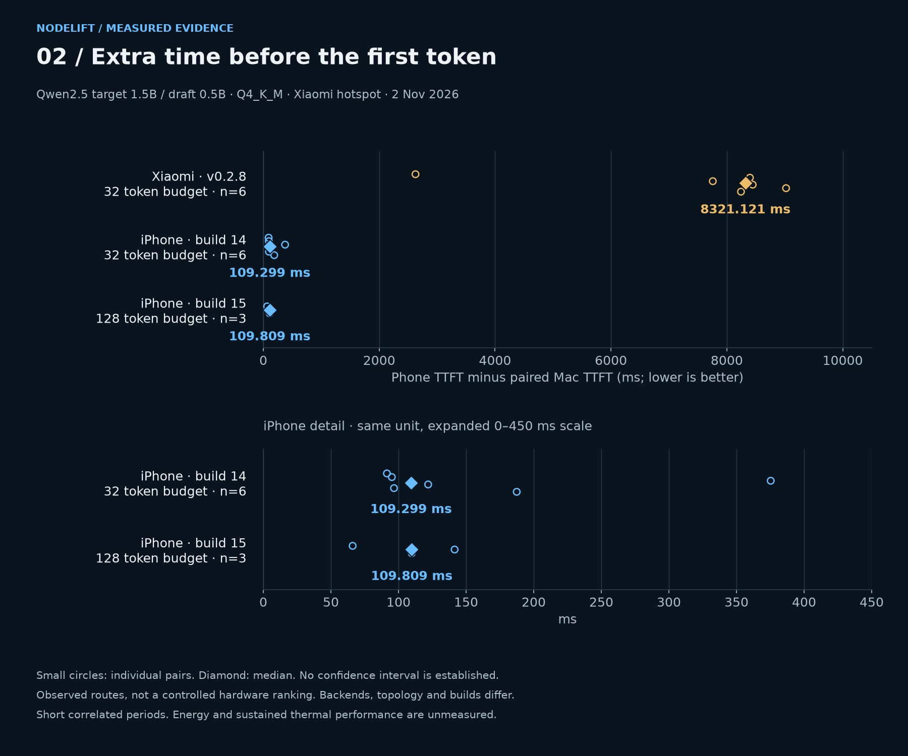
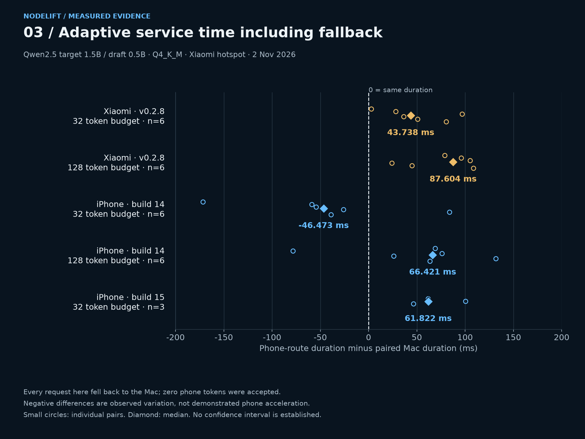
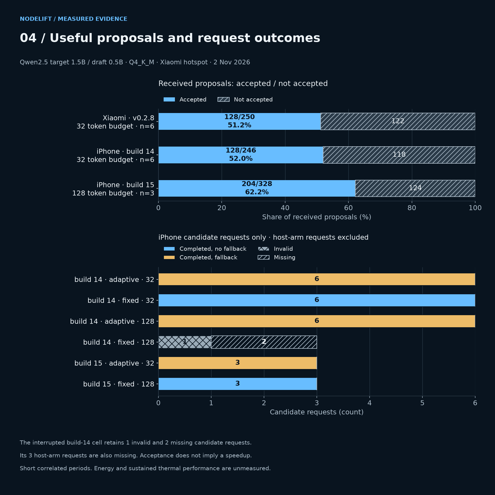
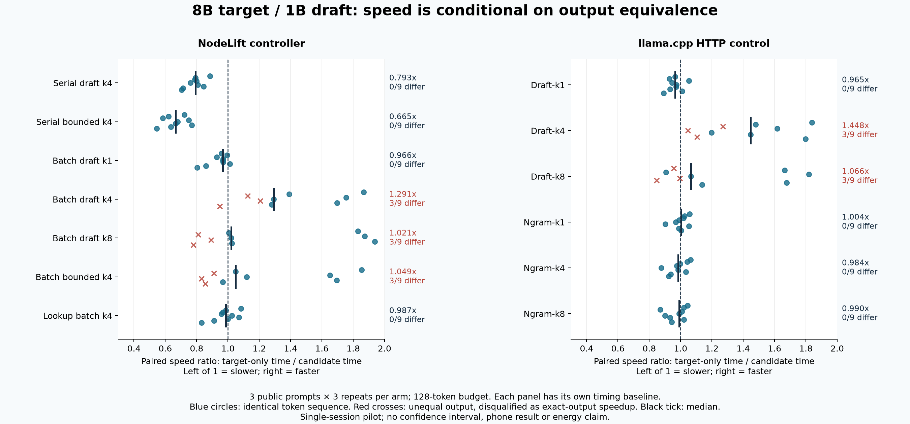
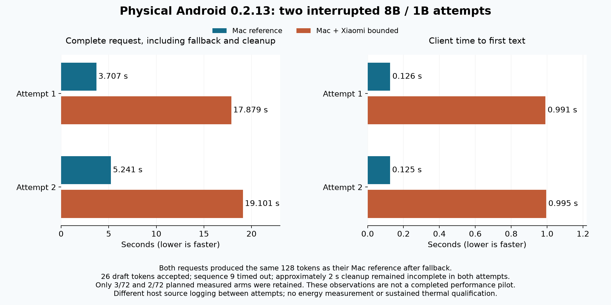

Capacity
Run a model that does not fit on one machine. This requires real partitioning of weights and state.
SHARDING: PLANNED[ 01 / 12 ] LOCAL INTELLIGENCE NETWORK
The next resource for local AI may already be in your hands. A computer. A phone. A different way to work together.
EXPERIMENTALCompanion 0.2.1303.11.2026

02 / THE QUESTION
RETHINK / REUSEA drawer of devices can become a research laboratory. Turning their resources into useful inference takes more than connecting them.
NodeLift explores how to extend the useful role of existing hardware. It measures the trade-offs openly. No environmental savings or phone acceleration have been demonstrated yet.
Run a model that does not fit on one machine. This requires real partitioning of weights and state.
SHARDING: PLANNEDGet the same target response sooner, including drafting, transfer, verification and rejected work.
CURRENT RESEARCH OBJECTIVEServe more requests across several devices. More concurrent work does not imply a faster individual chat.
MULTI-USER BATCHING: PLANNED03 / THE CURRENT PATH
PROPOSE → VERIFY → COMMITA small draft runs on the mobile node. The target stays on the host and verifies candidates before releasing text.
The phone receives tokenized context and proposes a small block of tokens. It is a trusted device, not a public node.
The phone receives tokenized context and proposes a small block of tokens. It is a trusted device, not a public node.
The target resident on the computer evaluates the candidates. It accepts up to the first disagreement, then corrects or produces the next token.
Only committed tokens reach the client. Context is resynchronized; the draft does not decide the final text.
A configurable 0.5–60 second deadline bounds each remote wait. On error or timeout, the computer continues and records the fallback.
Capacity sharding is not implemented. Phone RAM does not enlarge the target’s available memory in this version.
Read the architecture ↗04 / IMPLEMENTED TODAY
STATUS / 02 NOV 2026A compiled component, an observed test and a qualified device are different milestones. Here is where each part stands.
Pinned llama.cpp, greedy block verification, correction, EOS and KV resynchronization.
REAL-WEIGHT CHECKSXiaomi supplied accepted draft tokens in physical 0.2.8 and optimized 0.2.13 trials. A short 0.2.13 timing check matched the Mac; longer 8B attempts required fallback. No phone acceleration is qualified.
PHYSICAL TRIAL · NO SPEEDUPPrivate signed development builds 0.2.12 were tested on iPhone 15 Pro Max. Fixed drafting supplied accepted tokens but was slower than the Mac. The public 0.2.13 IPA remains unsigned.
PRIVATE DEVICE TRIALPinned TLS, bounded leases, epochs and model/token identities. Four loopback failure scenarios tested with an emulated node.
LOOPBACK TESTEDPairing, diagnostics, model settings, measured history and a local authenticated text/greedy API subset.
FUNCTIONAL CHECKSExperimental generator adapter. Real-weight handler tests passed; GUI installation and full plugin runtime remain unqualified.
HANDLER TESTEDLocal hardware/software inventory and explicit model microbenchmarks. Physically tested on Mac; Windows/Linux standalone startup and inventory checked on CI. Joining remote PC workers is still planned.
PROBE 0.1.1 PREVIEWOllama is not internally patched. Configurable OpenAI-style clients use NodeLift’s endpoint within its supported subset. HarmonyOS NEXT has a separate qualification candidate, without a HAP or native inference worker.
05 / EVIDENCE, NOT EXPECTATIONS
M3 MAX / 64 GiB / METALThe small control pair was slower with local drafting. That result matters as much as a future speedup.
Open measured results & raw data ↗Median paired end-to-end speedup, block 4. Below 1× means slower.
LOCAL DRAFT · NOT PHONE INFERENCELOCAL CODE REVIEW / 03 NOV 2026
The requested HauhauCS model ran locally through NodeLift. A provider cancellation defect was independently reproduced and fixed. Separate checks corrected JNI Unicode conversion and null telemetry totals. 167 host tests, 15 JNI cases and eight native correctness checks passed.
Raw model replies and rejected findings are retained. Static review is not a device test. The JNI fix is source-only; mobile build 16 is unchanged. No acceleration claim follows from this review.
Read the review and reproductions60 randomized runs · six prompts · two repetitions · up to 64 output tokens. All 48 paired token-ID comparisons matched. No confidence interval or thermal isolation was established.
CONTROL PAIR
Instruct · Q4_K_M · context 2048 · 8 CPU threads · greedy. The target and draft both ran on the Mac.
Separate upstream baseline. 15.344 tokens/s on a 27B host-only kernel test. It is neither chat latency nor proof of NodeLift hybrid-model support; the current verifier rejects that architecture.
What is still unmeasured. Physical native-phone speedup, long thermal sessions, battery cost, loaded-network latency and wired alternatives. Cloud CI passing does not qualify these.
M3 Max, Qwen2.5-0.5B Q4_K_M and three repetitions per configuration. Separate prefill/decode medians: CPU request 1,217.82 / 178.92 tokens/s; requested offload 8,235.86 / 322.51 tokens/s. Short local kernel tests only; effective accelerator allocation, client TTFT, energy and distributed benefit are not verified.
Inspect methodology and raw results ↗Follow-up: the Android 0.2.8 native build was unoptimized. Nine new iPhone comparisons still show no acceleration from changing draft width. The optimized 0.2.13 build now has a first physical timing check; repeated performance tests are pending. Read the diagnosis
Physical Xiaomi and iPhone tests, 2 November 2026. Different backends, builds and hotspot roles: these are measured routes, not a controlled hardware ranking.
Open a chart to inspect it. On a narrow screen, scroll the figure horizontally or open the full-size image.




Energy and sustained thermal performance are unmeasured. Points are observed pairs, not confidence intervals.
Read the source data and full reportsExploratory Mac tests found a verification mismatch in the existing batched path. An opt-in serial verifier matched the tested reference but was slower; draft cache improvements remain experimental. These are native microbenchmarks, not phone or end-to-end speedups.
Read the investigation and measurementsA new local pilot tested 48 extraction attempts on two resident models. Sending only the relevant record reduced serialized request size by a median 58.1%. Every raw output failed the strict JSON contract, so this is feasibility evidence, not a usable workflow speedup. No phone or network execution was tested.
Read the experiment, chart and proposed architectureExplore the experimental NodeLift wrapper on our llama.cpp fork and a macOS arm64 research prerelease. Prefix reuse is an existing llama.cpp capability; these synthetic Mac tests do not establish a phone speedup or distributed memory.
2 November macOS research binary: the experimental wrapper can interpret special-token spellings inside chat content as control tokens. This has been observed in tokenization checks; the published binary is not fixed. Do not rely on it to isolate untrusted chat content.
135 local runs compare NodeLift and upstream llama.cpp candidates on an 8B target with a 1B draft. Serial draft variants preserved the tested outputs but were slower. Batch k4 reached median ratios of 1.291x in NodeLift and 1.448x upstream, yet 3 of 9 outputs differed from each harness’s serial reference. These are disqualified as exact-output speedups.

The controlled probe reproduced a token flip with identical prefixes by changing both KV history construction and current batch shape. Serial repeat controls remained identical. Serial verification is now the default; the batch path remains explicitly experimental. This narrows the numerical investigation without identifying a specific faulty kernel.
GLM 5.3 Max and Gemini 4 Argon High reviewed the supplied design and protocol. Their findings were checked against code and evidence; they did not execute benchmarks. The optimized Android APK is ready for physical testing. iOS timing packages require signing and do not support the bounded pipeline.
Read raw runs, charts, timing limits and review decisionsAn optimized ARM64 laboratory APK adds native timing and an explicit bounded lookahead experiment. Physical-device performance is not yet qualified. Read the changes before updating; the general release downloads remain below.
Read changes and download the Android test buildPhysical Android follow-up: the 16-token Qwen check matched the Mac. With the 8B target and 1B draft, two longer attempts lost worker contact at sequence 9 after accepting 26 draft tokens. The Mac completed the same 128-token output through fallback. Observed durations were 17.879 vs 3.707 seconds and 19.101 vs 5.241 seconds. Only 3/72 and 2/72 planned arms ran; this is an interrupted diagnostic, not a qualified speedup. A later serial diagnostic reached all 32 TLS connection slots before expiry. The source host now closes companion responses promptly; 165 host tests pass. Physical post-fix validation and handshake overhead remain pending.

Gemini 4 Argon High completed a static review of four additional public build and documentation files. We reproduced a missing public header in the iOS framework, corrected both repositories and rebuilt the full arm64 framework successfully. This is a packaging fix, not a new companion release or a phone performance result.
The published research binary still has broad symbol exports; coexistence with other llama.cpp libraries remains unqualified. GLM 5.3 Max completed its core and performance reviews. Findings were checked against retained evidence; no new phone speedup was demonstrated.
Read findings, corrections and build evidenceGemini also completed scoped reviews of 15 translated entries, device-graph source, the QR protocol description and About/update sources. Verified fixes cover retry timing after clock correction and four graph presentation cases. All 22 Android unit tests, Swift policy checks and the four synthetic DOM regressions pass. These are source updates; no new mobile package or physical-device qualification is implied.
Read the product review and regression evidence Read the completed performance assessmentGemini 4 Argon High reviewed three supplied core and benchmark files on 2 November; GLM 5.3 Max completed its static review on 3 November. Neither reviewer executed NodeLift. Their findings are adjudicated against source and local evidence, with unresolved limits retained.
The Llama cache experiment shared 257 and 1,025 tokens, including an extra beginning-of-sequence token. The published timings are unchanged. The runner now reports the supplied model filename and actual shared length; a Qwen check produced matching outputs in 12 of 12 pairs.
Read the review and test evidence View the community fork and prereleaseOn one Mac, two exploratory NodeLift sessions found a small median total-time benefit for local draft width 4, with a later first token. All measured pairs matched in token IDs and finish reason. Both models remained on the Mac; this is not a phone or distributed speedup.

06 / THE GLOBAL ATLAS
SOURCE / SCOPE / EVIDENCEDistributed runtimes, mobile nodes, serving engines and research. Compare mechanisms and evidence, without a universal winner score.
Research entries are in English to preserve one canonical source. Ecosystem indicates project provenance, not ethnicity. This is a dated selection, not an exhaustive inventory.
Tags describe documented capabilities; they do not establish physical-device qualification.
9 columns · scroll horizontally · select a project for all fields and sources
Try a broader term or reset the filters. Missing evidence is never treated as support.
The narrative remains available. Retry or open the canonical JSON and methodology directly.
Mobile client support is different from executing model layers or draft inference on the phone. Capacity sharding, request routing and speculation solve different problems. Tags are explicit dataset annotations; no platform support is inferred from an unspecified field.
Each project detail includes scope, evidence, limitations, lessons, license, revision/date and primary links. A repository claim is not an independently reproduced benchmark. Cross-hardware performance numbers are not ranked.
07 / STAND ON WHAT EXISTS
PRIOR ART / NEXT QUESTIONSDistAI, PhoneBorg, Infer Ring, prima, exo and browser prototypes already explore pieces of this territory.
NodeLift does not claim to have invented mobile clustering, measured-node selection or remote speculation. Its contribution must emerge from reproducible results under real heterogeneous-device constraints.
Choose by committed tokens and full round time, including the work that gets discarded. Keep host-only when delegation loses.
Thermal throttling, battery, foreground limits and radio contention must be measured beyond a short successful demo.
Bound stalls, reject stale work and measure recovery cost. Delta contexts and asynchronous overlap remain research work.
08 / THE NEXT EXPERIMENTS
EVIDENCE GATES / NOT PROMISESThe engine exists. Its next claims must be earned on physical hardware, with the strongest applicable local baseline.
Core, authenticated mobile work, companions, local controls and published small-pair results.
Repeat paired host/local/remote trials with an optimized Android build and compatible larger targets. Measure sustained thermals, power and hotspot versus wired paths.
Compatible target/draft pair, or hybrid-state checkpoint restoration with verified correctness and measured cost.
Adaptive node/block choices, acknowledged context deltas and asynchronous work, including failure and waste accounting.
Qualify the probe on physical Windows/Linux ARM and x86 machines, then build trusted PC/server workers and real target partitioning. Inventory does not add RAM to the host.
09 / BUILD THE NEXT EVIDENCE
OPEN SOURCE / OPEN QUESTIONS
Bring a device, a reproducible test or a better baseline. Help turn a compelling possibility into evidence.
Build with NodeLift ↗Local hardware/software inventory and explicit model microbenchmarks. Standalone previews include Python; the older zipapp requires Python 3.10+. Windows/Linux physical qualification and remote worker enrollment remain open.
MACOS / APPLE SILICON · 0.1.1 PREVIEWDownload standalone probe · no Python requiredBundled runtime and benchmark; startup check. Ad-hoc signed, not notarized. Tested on one M3 Max; model supplied separately.↓ WINDOWS / X64 · 0.1.1 PREVIEWWindows x64 standaloneNo system Python · CPU benchmark · CI startup checked · physical device untested↓ WINDOWS / ARM64 · 0.1.1 PREVIEWWindows ARM64 standaloneNo system Python · CPU benchmark · CI startup checked · physical device untested↓ LINUX / X64 · 0.1.1 PREVIEWLinux x64 standaloneNo system Python · CPU benchmark · CI startup checked · physical device untested↓ LINUX / ARM64 · 0.1.1 PREVIEWLinux ARM64 standaloneNo system Python · CPU benchmark · CI startup checked · physical device untested↓ MACOS / INTEL · 0.1.1 PREVIEWmacOS Intel standalone probeNo system Python · CPU benchmark · CI startup checked · not notarized↓ PYTHON 3.10+ / LOCAL ONLYDownload Python zipapp alternativemacOS, Windows, Linux · no model or runtime bundled↓ GUIDE / HASHES / EVIDENCEProbe commands and qualification limitsInventory, model benchmarks and retained raw results↗QR pairing: Add device on the computer, then Scan QR in the companion.
Compiled laboratory builds. English, 简体中文 and Italiano. Installation and physical-device qualification are separate steps; read the platform requirements before downloading.
ANDROID / ARM64 · 13.39 MiBDownload Android APKAndroid 8+ · debug-signed laboratory build↓ iOS / iPadOS · ARM64 · 5.24 MiBDownload unsigned iOS IPAiOS 17+ · requires personal signing and provisioning · no direct Safari installation↓ iOS / DEVELOPER ARCHIVE · 5.24 MiBDownload compiled .app ZIPSame compiled app as the IPA · unsigned · no TestFlight release↓ HARMONYOS / APK-COMPATIBLE DEVICES ONLYDownload APK for a compatibility trialSame Android package · requires APK support, API 26+ and ARM64 · Huawei installation unverified · not for NEXT↓ HARMONYOS NATIVE / HARMONYOS NEXTNative HAP not yet availableArkTS source candidate · SDK build, signing and device tests pending · no native LLM worker↗ INSTALLATION / REQUIREMENTSPlatform installation guideSigning, supported formats, pairing and known limits · English↗ INTEGRITY / SHA-256Package hashes and availabilityVersions, exact sizes, signature status and verification scope↗ RELEASE / SOURCEPrerelease and build evidencePublished artifacts and original build manifest↗ DOCUMENTATIONStart a local laboratoryHost setup, mobile models and limits↗Local intelligence. Distributed possibilities.
No account. No telemetry on this site. No performance promises.10 / ABOUT & CREDITS
THE PERSON / THE PROJECTProject vision, objectives and research direction. NodeLift is part of my independent work connecting technology, evidence and responsible innovation.
AI-assisted development, with tests, reviews and observed results documented in the repository.
Read the validation record ↗The native core uses llama.cpp; the LM Studio adapter uses its SDK. Dependencies, research snapshots and model weights retain their own authorship and licenses.
Third-party acknowledgements ↗An original identity created for NodeLift. The assets and their creation process are documented with the project.
Identity & assets ↗11 / ACKNOWLEDGEMENTS
PEOPLE / PROJECTS / KNOWLEDGENodeLift is an independent project by Fabrizio Degni, made possible by open-source foundations and shared research. Thank you to the authors, maintainers, researchers and contributors who make that knowledge available.
The GGML community and contributors
The pinned native inference dependency at the heart of NodeLift. Upstream MIT notices and attribution are retained.
Nayuki, ZXing and AndroidX contributors
QR generation, decoding and the camera layer used by pairing. Their individual licenses and notices are documented in the repository.
Local review model: thanks to HauhauCS for the published quantization and to the llama.cpp contributors for the runtime. Model assistance does not imply endorsement or independent certification. HauhauCS / Qwen3.8 27B
The LM Studio team and contributors
The adapter uses @lmstudio/sdk. Other public LM Studio projects informed targeted studies; their presence here is not a claim of code reuse.
jundot and contributors
Studied downloads, cache ownership and distributed pipelines. NodeLift’s API bridge is independently written; no oMLX engine or kernel code was copied.
Thanks to the linuxhw contributors for hardware, driver and operability diagnostics. NodeLift uses independent local adapters; no hw-probe code or upload service is bundled.
alex8819 and contributors
A special thank you for sharing both the approach and its limits. The targeted code and results study informed NodeLift’s questions about partitioning, networks, memory limits and negative results. DistAI is a research reference, not a runtime dependency.
morluto and contributors
Studied artifact validation, evidence and lifecycle patterns. No REA code is vendored in NodeLift.
The TypeSafe team and contributors
Typed decisions and routing were studied as design references. No Jev model or runtime is integrated.
apoorvumang and contributors
Acknowledged prior art for prompt lookup. NodeLift’s lookup implementation was written independently.
[ 12 / 12 ] RELEASE HISTORY
Version, build, changes and verification limits. Release notes are maintained in English from the same source as GitHub.
Validation: 163 host tests, 25 Android JVM tests, Android lint (0 errors, 18 warnings), Swift protocol/transfer checks on macOS and unsigned iOS ARM64 compilation passed. The final host library passed 31 real-weight serial checks and 15 boundary checks; four additional failure-injection cases passed in a separate test build. Five real-weight TLS loopback cases preserved output. APK optimization flags and published package hashes were verified. 135 local pilot runs compare an 8B target and 1B draft, retaining output mismatches. GLM 5.3 Max and Gemini 4 Argon High reviewed the supplied design; they did not execute tests.
Limits: Physical testing of this Android/iOS build is pending. Android has explicit bounded lookahead; iOS has timing support and does not advertise that pipeline. Batch verification can diverge from the serial reference and remains experimental. Exact-output local variants did not establish a speedup. ACK wait, failed compute and missing cleanup reports remain incompletely measured. Android is debug-signed; iOS requires Apple signing and provisioning. No distributed speedup, pooled memory or measured energy saving is claimed.
Validation: 118 host tests, five desktop JavaScript suites, 21 Android JVM tests, Android lint (0 errors, 17 warnings), both Swift policy suites and unsigned iOS ARM64 build passed. Live Hugging Face metadata rendering and one retained legacy/stable enrollment were verified on the local dashboard. Gemini 4 Argon High supplied a textual UX review. Physical device installation, accessibility and browser download handoff remain unqualified.
Limits: Android remains debug-signed with the existing laboratory signer. iOS requires Apple signing and provisioning; downloading an IPA cannot install it. Browser downloads are not hash-verified by the companion. No new inference speedup or shared-memory capability is claimed. HarmonyOS/NEXT builds remain deferred.
Validation: Android build, 18 JVM tests and lint (0 errors, 17 warnings), plus unsigned iOS ARM64 build passed. Verified existing Android signer, current localization catalogs, unchanged native libraries, source parity and identical ZIP/IPA app payloads. Desktop backend controls have separate live LM Studio and public OpenRouter catalog evidence. No physical-device qualification.
Limits: Android remains debug-signed with the existing laboratory signer. iOS packages are unsigned and require Apple signing and provisioning. Physical installation, accessibility and mobile LLM speedup are not qualified. HarmonyOS/NEXT native builds remain deferred.
Validation: 115 host tests, five JavaScript suites, 18 Android JVM tests, Android lint (0 errors, 17 warnings) and unsigned iOS ARM64 compilation passed. An isolated browser and synthetic TLS worker exercised enrollment and sequential assessment. Gemini 4 Argon High provided a textual UX architecture review. Physical accessibility, networking and LLM speedup remain unqualified.
Limits: Physical Android/iOS accessibility and stable mobile inference are not qualified. Basic assessment is HTTPS plus a synthetic CPU kernel; model-specific usefulness still needs a matched native comparison. Session boundaries are inferred after a contact gap over 20 seconds. iOS packages require Apple signing. HarmonyOS/NEXT remains deferred.
Validation: Android build, 14 JVM tests and lint (0 errors, 17 warnings), unsigned iOS ARM64 build, 10 enrollment identity tests, 24 host protocol/network tests and real Swift TLS repeat enrollment on macOS passed. Kotlin/Swift identity and proof vectors match the host. Physical-phone repeated QR qualification remains pending.
Limits: Update the desktop host before pairing with 0.2.8. Removing Android app data or losing identity storage creates a new installation; automatic physical-device recognition after identity loss is not claimed. Older companions do not send identity proof. HarmonyOS/NEXT builds remain deferred. No inference performance claim.
Validation: Android compilation, 13 JVM tests and lint (0 errors, 19 warnings), unsigned iOS ARM64 device build, 24 host protocol/network tests, localization and graph accounting checks passed. Browser fixture verified weighted animation and the motion toggle using explicitly synthetic data. Android signer continuity, packaged artwork, unchanged native LLM libraries and identical ZIP/IPA app payloads were verified. Physical-device reconnection and installation remain unconfirmed.
Limits: No physical Oppo/Xiaomi installation or camera qualification in this build. Token share is not compute utilization or a speedup. iOS packages require Apple signing. HarmonyOS/NEXT source artwork is updated but native builds remain deferred. Native LLM libraries are reused; no engine performance claim.
Validation: Android app/instrumentation compilation and lint, ten JVM QR/support policy tests, unsigned iOS device compilation, Swift journal/update checks, 19 host protocol tests, localization and focused desktop control tests passed. Android signing continuity and unchanged native libraries were verified. Actual external source/design reviews are scoped in release evidence. Physical scanning, sharing and weekly scheduling on a phone were not tested.
Limits: The reported Xiaomi crash remains unconfirmed without a device log; install and exercise the new APK. Logs are best effort and cannot capture every native crash. OS suspension delays checks until execution resumes. iOS packages require Apple signing; TestFlight/App Store distribution is planned, not available. HarmonyOS/NEXT builds remain deferred. No new inference speedup or pooled-RAM result.
Validation: Android and unsigned iOS device compilation, host protocol and desktop lifecycle checks, Swift parsing and loopback TLS tests passed. Independent ZXing decoding recovered the QR from a desktop screenshot. Published package hashes were verified.
Limits: Physical Android/iOS camera scanning remains unqualified. iOS requires personal Apple signing/provisioning and cannot install directly from Safari. HarmonyOS/NEXT builds are deferred. No inference speedup or RAM-pooling claim.
Validation: 717-key catalog parity, JavaScript/Swift formatters, graph checks, 16 focused host protocol tests and desktop browser checks passed. GLM 5.3 Max reviewed selected About source; no Gemini review for this change.
Limits: No physical Android/iPhone installation or UI qualification. Native HarmonyOS/NEXT remains uncompiled without a HAP or native LLM worker. No new native-engine performance result.
Validation: Catalog/placeholder/freshness, JavaScript/Swift formatter and live browser checks passed. Android app/instrumentation APKs and unsigned iOS device app compiled; native binaries match 0.2.2.
Limits: Physical mobile UI and Android instrumentation execution remain unverified; no ADB device was available. No new GLM/Gemini review for Italian. iOS requires signing; no HarmonyOS HAP or new speed benchmark.
Validation: 40 host tests, localization/formatting checks and live browser checks passed. Android and unsigned iOS builds compiled. GLM 5.3 Max reviewed 15 terminology entries; Gemini High was usage-limited.
Limits: Physical localization and sustained active-node switching remain unverified. Android instrumentation did not execute because the emulator stayed offline. No physical-phone acceleration or pooled RAM established.
Validation: 26 host tests, 29 real-weight native checks, four real-weight TLS loopback fault cases, live gateway checks and three adapter stream tests passed. Android and unsigned iOS device builds compiled.
Limits: The remote test node was emulated. Physical-phone inference/speedup, sustained thermals, capacity sharding, hybrid speculative checkpoints, HarmonyOS native worker and installed LM Studio GUI qualification remained open. The 27B upstream kernel result is not NodeLift hybrid-model support.